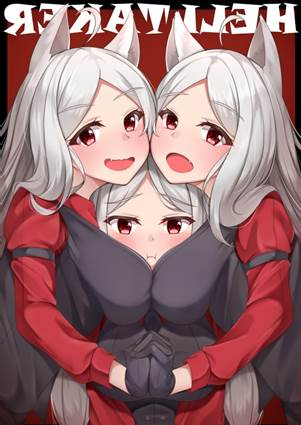

獄犬Cerberi
為活人和死者共同畏懼的獄犬在塔提科斯之河（Tartyx
River）的兩岸梭巡。這些多頭的冥界獵犬能吐出團狀的熔巖，燒灼並禁錮那些越過生死邊界之人。大部分獄犬對於鮮肉，尤其是類人生物的血肉都懷著無盡的飢渴。據說一些惡徒會利用這種飢渴將獄犬從河邊引走，並放出到凡人的聚居地中。
雙頭獄犬Two-Headed
Cerberus
雙頭獄犬被認為是與凡間的狼雜交產生的小型獄犬，它們常常在塔提科斯之河的凡人一側遊蕩。它們通常會忽視或是溫和地威脅死者的靈魂，但對凡人並非如此。它們會飢渴地攻擊那些過於靠近冥界邊境之人。
冥界獄犬Underworld
Cerberus
三頭的獄犬棲息於冥界深處。這些狡詐而可怖的生物守衛著冥界的大門、厄睿柏斯最為珍貴的寶藏，以及那些試圖逃離死者國度的值得注意的靈魂。三頭獄犬通常為惡魔服務，但如果任由它們自由行動，它們會把狡猾的靈魂驅趕到迷宮般的冥界曠野里，然後獵殺它們作為運動。
雙頭獄犬Two-Headed
Cerberus
中型怪獸，守序邪惡
AC：12
(天生護甲)
HP：39
(6d8+12)
速度：40尺
力量15(+2)
敏捷14(+2)
體質14(+2)
智力3(-4)
感知13(+1)
魅力6
(-2)
技能：察覺+5，隱匿+4
傷害免疫：火焰，暗蝕
狀態免疫：目盲，魅惑，耳聾，力竭，恐慌，震懾
感官：黑暗視覺60尺，被動察覺15
語言：-
挑戰等級：2(450XP)
好鬥Aggressive.以一個附贈動作，獄犬可以朝它可見的一個敵對生物移動最多相當於其速度的距離。
多頭Multiheaded.獄犬不會被突襲，且它在進行對抗失能的豁免檢定時具有優勢。
集群戰術Pack
Tactics.至少有一個未處於失能的盟友在目標生物5尺內時，獄犬對該生物發動的攻擊檢定具有優勢。
動作Actions
多重攻擊Multiattack.獄犬進行兩次啃咬攻擊。
啃咬Bite.近戰武器攻擊：命中+4，觸及5尺，單一目標。
傷害：5（1d6+2）穿刺傷害外加2（1d4）火焰傷害。
吐息武器Breath
Weapon（充能5-6）. 獄犬噴出15尺錐狀熔巖。區域內每個生物必須進行DC12的敏捷豁免，失敗受到10（3d6）火焰傷害，成功則受到一半傷害。豁免失敗的情況下，該生物同時被凝固的巖石束縛。該生物或另一個能觸及巖石的生物可以以一個動作進行DC12的力量（運動）檢定，成功則將它從束縛中解救出來。巖石具有AC17和10生命值，它無視火焰、毒素和心靈傷害。
冥界獄犬Underworld
Cerberus
大型怪獸，守序邪惡
AC：16(天生護甲)
HP：104
(11d10+44)
速度：60尺
力量19(+2)
敏捷12(+1)
體質18(+4)
智力10(+0)
感知16(+3)
魅力9
(-1)
技能：運動+7，察覺+,9，隱匿+4
傷害免疫：火焰，暗蝕
狀態免疫：目盲，魅惑，耳聾，力竭，恐慌，震懾
感官：真實視覺30尺，被動察覺19
語言：理解所有語言但不會說
挑戰等級：6(2300XP)
好鬥Aggressive.以一個附贈動作，獄犬可以朝它可見的一個敵對生物移動最多相當於其速度的距離。
多頭Multiheaded.獄犬不會被突襲，且它在進行對抗失能的豁免檢定時具有優勢。
集群戰術Pack
Tactics.至少有一個未處於失能的盟友在目標生物5尺內時，獄犬對該生物發動的攻擊檢定具有優勢。
動作Actions
多重攻擊Multiattack.獄犬進行三次啃咬攻擊。
啃咬Bite.近戰武器攻擊：命中+7，觸及5尺，單一目標。
傷害：11（2d6+4）穿刺傷害外加4（1d6）火焰傷害。
吐息武器Breath
Weapon（充能5-6）. 獄犬噴出30尺錐狀熔巖。區域內每個生物必須進行DC15的敏捷豁免，失敗受到21（6d6）火焰傷害，成功則受到一半傷害。豁免失敗的情況下，該生物同時被凝固的巖石束縛。該生物或另一個能觸及巖石的生物可以以一個動作進行DC15的力量（運動）檢定，成功則將它從束縛中解救出來。巖石具有AC17和20生命值，它無視火焰、毒素和心靈傷害。
（這就是三頭冥界獄犬↓）
